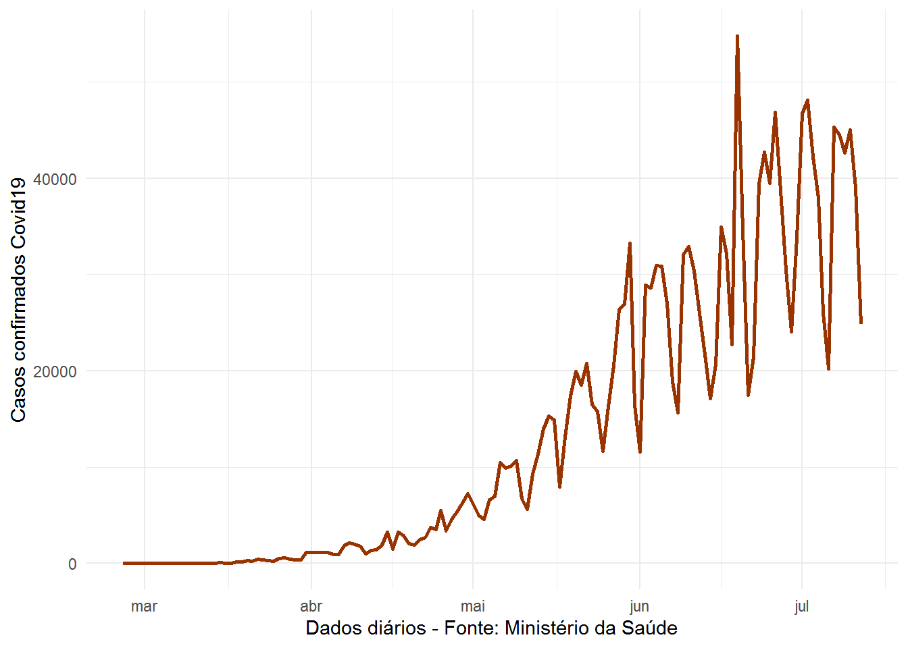
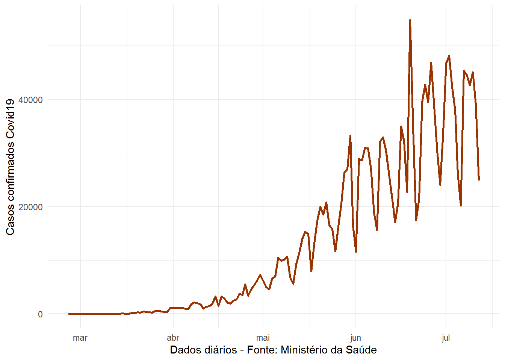
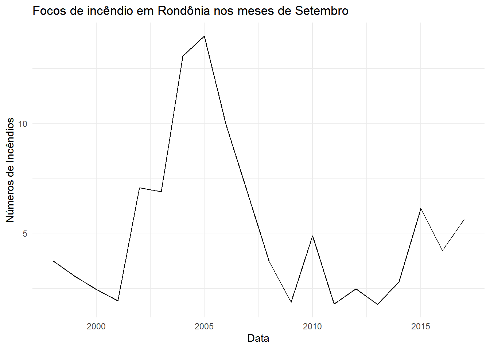

Capítulo 1 Séries temporais
Dados de séries temporais são obeservações de um evento ou fenômeno ao longo do tempo. Os intervalos de observações devem ser igualmente espaçados. Geralmente são anos, trimestres, meses, semanas, dias, horas, minutos e segundos. Mas outros tipos de espaçamentos entre observações também são comuns. Como é o caso do Censo Demográfico.
No Figura 1.1 apresentamos alguns exemplos de sériestemporais com diferentes intervalos de observações.

 

Figura 1.1: Séries temporais com diferentes intervalos de observações
Uma série temporal com observações a cada dez anos é a da população brasileira.
1.1 Breve introdução ao R
Das linguagems de programação voltadas a manipulação, vizualização e análises de dados, o R é umas das mais difundidas entre a comunidade Estatística. Outras linguagens, como o Python, tem um apelo maior quando se trata de ciência de dados, no seu sentido mais amplo.
1.2 Apresentação da linguagem R
R é uma linguagem de programação caracterizada como Software Livre sob os termos da General Public License (GNU) da Free Software Foundation no formato open source. É voltada a manipulação, análise e vizualização de dados e tem como característica o aspecto colaborativo, sendo que as ferramentas desenvolvidas são compartilhadas online pelos desenvolvedores, podendo ter acesso a elas qualquer pessoa, sem restrições. Uma breve história do R pode ser encontrada no wikipedia.
1.3 Instalando o R
Para instalar no computador, O R deve ser baixado do CRAN.

Figura 1.2: Comprehensive R archive network (CRAN)
Se o sistema operacional for Linux, uma versão base do R ja vem instalada. No cado de outros sistemas operacionais, como o Windows, é necessário instalar o R base.
1.4 Instalando o RStudio
Como quase toda linguagem Open Source a utilização se dá por meio de linhas de comando. Para tornar a linguagem mais amigável aos usuários, várias IDEs (integrated development environment) são utilizadas. No caso do R, a mais desenvolvida e utilizada é o RStudio.
Uma versão Free do RStudio para o seu desktop pode ser baixado de https://rstudio.com/products/rstudio/download/.
Depois de instalar o R, o RStudio já estará integrado ao R e terá uma interface intuitiva e amigável ao usuário.
Ainda assim, é importante ressaltar que na linguagem R não encontraremos botões para realizar as análises.

Figura 1.3: Interface do RStudio
1.5 Diretório de trabalho
Um ação importante que deve ser realizada pelo usuário é setar o diretório de trabalho. Para isso existem diferentes formas. Uma delas é usando a função setwd() .
Outra opção é através do Go to directory que está disponível no Workspace do RStudio, conforme figura ??. Nessa opção o usuário escolhe o diretório de trabalho e depois usando a opção set as working directory esse diretório será “settado” como diretório de trabalho.
Todas os arquivos gerados, como figuras serão salvos nesse diretório. Para abrir um conjunto de dados, por exemplo, será muito mais simples se este também estiver salvo no mesmo diretório ou um subdiretório. Além disso, toda vez que o RStudio for reinicializado, esse procedimento terá que ser refeito.
1.6 RStudio Cloud
Outra forma simples e prática para usar o R e o RStudio é usar o RStudio Cloud.
THE MISSION We created RStudio Cloud to make it easy for professionals, hobbyists, trainers, teachers and students to do, share, teach and learn data science. (???)

Figura 1.4: Rstudio Cloud
Na núvem é possível usar o RStudio utilizando um login através da conta google, ou criar gratuitamente uma conta. Uma vez logado, escolhendo a opção project o usuário terá uma versão do RStudio perfeitamente funcional, que pode ser utilizada até no smartphone. Obviamente, é necessário ter conexão com a internet para que a ferramenta possa ser utilizada.

Figura 1.5: Rstudio Cloud
1.7 Instalação de pacotes
Na versão base do R, uma série de ferramentas, funções e métodos estatísticos são disponibilizados. Além disso, alguns pacotes também compõe a versão base do R. Depois de instalado, o usuário pode verificar quais pacotes estão instalados acessando o ícone Packages em Tools ou digitando installed.packages() no console.
Para instalar um novo pacote, o usuário pode acessar o ícone Packages e depois clicar em Install ou digitar no console install.packages(“nome do pacote”) . Como exemplo, podemos instalar o pacote usado para vizualização de dados chamado ggplot2.
1.7.1 Carregando pacotes
Importante para usuários iniciantes na linguagem R é entender a diferença entre instalar pacotes e carregar pacotes. Uma vez instalado, o pacote estará a disposição do usuário sempre que ele precisar, mas é necessário carregá-lo. É comum deixar um comando nos scripts para que cada vez que seja necessário usar alguma função específica de um pacote, ele primeiro seja carregado. O comando usado é o library() mas pode ser feito acessando o espaço que chamando de Tools, clicar em Packages e marcar o pacote desejado para carregá-lo.
1.8 Ajuda
Para um usuário iniciante no R é fundamental saber como resolver problemas diversos que certamente vão surgir durante a instalação de um pacote, uso de uma função, criação de um gráfico, manipulação de dados, etc. Muitas coisas no R são feitas por tentativa e erro, mas o conhecimento é acumulativo e problemas similares, poderão ter uma solução mais rápida. Uma das grandes vantagens da utilização do R é que a comunidade é bastante ativa. Existem diferentes formas de conseguir ajuda e vou elencá-las em ordem de importância, segundo a forma utilização desse autor:
Google
Stack Overflow
Help do R (
help()ou?)
1.8.1 Google
Para um iniciante em R coisas simples como calcular a raíz quadrada de um número pode ser difícil. Nesses caso o google é muito útil.

Figura 1.6: Rstudio Cloud
Um pouco de conhecimento de inglês aumenta consideravelmente as opções de ajuda no google.
1.8.2 Stack Overflow
Quando o problema parecer um pouco mais complexo, uma opção é colocar a pergunta no google junto com Stack Overflow. Isso provavelmente direcionará o usuário para Stack Overflow em Português ou Stack Overflow que são sites de Pergunta e Resposta utilizados por todas as linguagens de programação.

Figura 1.7: Rstudio Cloud

Figura 1.8: Rstudio Cloud
1.8.3 Help do R
Se o usuário já sabe qual função deve ser usada, então a documentação do R é bem útil.
Dicas para uso do Help
- Pode-se ir direto aos exemplos que estão no final;
- Identificar os parâmetros (Arguments);
- Funções relacionadas podem ajudar, dependendo da necessida.
- Vignettes, que são tutorias mais completos, mas somente alguns pacotes possuem. Esses textos podem ser acessados com a função vignette(package = ‘nomeDoPacote’). Por exemplo, vignette(package = ‘ggplot2’)
1.9 Funcionalidades básicas
Para maior agilidade é importante que o usuário conheça algumas teclas de atalho. Apertando simultaneamente Alt + Shift + K o usuário tem acesso à uma grande quantidade de atalhos. Ou clicado em Tools no menu de ícones do RStudio. Um comando de atalho que destacaria por ser extremamaente útil é o Ctrl + Enter. Esse comando executa a linha do script em que o cursor está.
Para começar, usaremos o R como uma calculadora simples. Execute o código a seguir diretamente do console do RStudio ou no RStudio, escrevendo-os em um script e executando-os usando Ctrl + Enter.
1.9.1 Operações básicas
1.9.1.1 As quatro operações
| Operação | código R |
Resultado |
|---|---|---|
| \(3 + 2\) | 3 + 2 |
5 |
| \(3 - 2\) | 3 - 2 |
1 |
| \(3 \cdot2\) | 3 * 2 |
6 |
| \(3 / 2\) | 3 / 2 |
1.5 |
## [1] 12## [1] 8## [1] 20## [1] 51.9.1.2 Exponenciação
| Operação | código R |
Resultado |
|---|---|---|
| \(3^2\) | 3 ^ 2 |
9 |
| \(2^{(-3)}\) | 2 ^ (-3) |
0.125 |
| \(100^{1/2}\) | 100 ^ (1 / 2) |
10 |
| \(\sqrt{100}\) | sqrt(100) |
10 |
## [1] 1001.9.1.3 Logarítimos
Observe que não existe ln() no R. Usa-se log() para significar logarítimo natural. Para as demais bases, é necessário especificar a base desejada.
| Operação | código R |
Resultado |
|---|---|---|
| \(\log(e)\) | log(exp(1)) |
1 |
| \(\log_{10}(100)\) | log10(100) |
2 |
| \(\log_{2}(16)\) | log2(16) |
4 |
| \(\log_{4}(16)\) | log(16, base = 4) |
2 |
## [1] 2.302585## [1] 3.3219281.9.1.4 Constantes matemáticas
| Constante | código R |
Resultado |
|---|---|---|
| \(\pi\) | pi |
3.1415927 |
| \(e\) | exp(1) |
2.7182818 |
## [1] 1## [1] 7.3890561.9.2 Operadores lógicos
| Operador | Significado | Exemplo | Resultado |
|---|---|---|---|
x < y |
x menor do que y |
3 < 42 |
TRUE |
x > y |
x maior do que y |
3 > 42 |
FALSE |
x <= y |
x menor ou igual à y |
3 <= 42 |
TRUE |
x >= y |
x menor ou igual ày |
3 >= 42 |
FALSE |
x == y |
x igual à y |
3 == 42 |
FALSE |
x != y |
x diferente de y |
3 != 42 |
TRUE |
!x |
não x |
!(3 > 42) |
TRUE |
x | y |
x ou y |
(3 > 42) | TRUE |
TRUE |
x & y |
x e y |
(3 < 4) & ( 42 > 13) |
TRUE |
1.9.2.1 Operador lógico if()
Dentro dessa classe de operadores, podemos destacar o operador if(). É comum usar esse operador para testar condições únicas ou múltiplas na instrução if() ou ifelse(). Operadores lógicos em R podem ser aplicados a vetores numéricos ou complexos ou objetos booleanos, que são TRUE ou FALSE (à eles são reservados os atalhos T e F).
## [1] "A é maior do que B"## [1] "A não é maior do que B"Outra forma simples de usar o operador é:
## [1] FALSE1.9.2.2 Operador lógico ifelse()
O operador ifelse( “1”, “2” , “3”) possui 3 entradas. Na primeira “1”, deve-se colocar a condição a ser testada. Em “2” o resultado caso a condição testada seja verdadeira e em “3” o resultado, caso a condição testada seja falsa.
1.9.2.3 Operadores de atribuição
Os operadores de atribuição são provavelmente a família de operadores que você mais usará enquanto
trabalha com R. Como o nome desse grupo implica, eles são usados para atribuir objetos, como
valores numéricos, strings, vetores, modelos e plotagens para um nome (variável). Isso inclui
operadores como a seta para trás (<-) ou o sinal de igual (=)
Para visualizar a variável, podemos simplesmente digitá-la ou usar a função print()
## [1] "Em Brasília, 19 horas!"## [1] "Em Brasília, 19 horas!"Para visualizar mais de uma variável, podemos usar “c()” para “juntar as variáveis”
## [1] "Em Brasília, 19 horas!" "10"## [1] "Em Brasília, 19 horas!" "10"Esse exemplo pode ser repetido usando “=” no lugar de “<-”
1.9.3 Tipos de dados
R possui um número básico de tipos de dados. Enquanto o Ré uma linguagem fortemente tipada (não exige do usuário muito conhecimento sobre diferentes tipos de dados) é útil conhecer os tipos disponíveis.
- Numeric
- Também conhecido como duplo. O tipo padrão ao lidar com números.
- Exemplos:
1,1,0,42,5
- Integer
- Exemplos:
1L,2L,42L
- Exemplos:
- Complex
- Exemplo:
4 + 2i
- Exemplo:
- Logical
- Dois valores possíveis:
TRUEeFALSE - Você também pode usar
TeF, mas isso não é recomendado. NAtambém é considerado lógico.
- Dois valores possíveis:
- Character
- Exemplos:
" a "," Statistics "," 1 mais 2. "
- Exemplos:
- Categorical or
factor- Uma mistura de número inteiro e caractere. Uma variável
fatoratribui um rótulo a um valor numérico. - Por exemplo,
fator (x = c (0,1), labels = c (" male "," female ")))atribui a string male aos valores numéricos0e a string female ao valor1.
- Uma mistura de número inteiro e caractere. Uma variável
1.9.4 Valores especiais
Assim como TRUE e FALSE, existem outros valores reservados à situações específicas.
NA(Not Available) representa dado faltante (não disponível), ou que que é chamado em estatística de missing data.NaN(Not a Number) são gerados quando temos uma indefinições matemáticas, como sqrt(-1) e 0/0.Inf(Infinito) é usado quando o valor numérico é muito grande (limite). Por exemplo,exp(2000).NULLsignifica ausência de informação. Parecido com oNA, mas conceitualmente mais usado na lógica de programação.
As funções is.na(), is.nan(), is.infinite() e is.null()podem ser usadas para verificar se um objeto possui algum valor com essa caraterística.
1.10 Estrutura dos dados
R também possui um número básico de estrutura de dados. Essa estrutura de dados pode ser homogênea ( setodos os elementos são do mesmo tipo de dados) ou heterogênea (se os elementos podem ter mais de um tipo de dados).
| Dimensão | Homogênea | Heterogênea |
|---|---|---|
| 1 | Vector | List |
| 2 | Matrix | Data Frame |
| 3+ | Array | nested Lists |
1.10.1 Vetores
Muitas operações em R usam vetores. Um vetor contém um conjunto de objetos de tipos identicos e são indexados começando na posição 1. A maneira mais comum para se criar um vetor é usar a função c(), o que é uma abreviação de combine(). Ela combina uma lista de elementos separados por ,. Por exemplo,
## [1] 1 2Ou podemos combinar outros objetos, desde que sejam do mesmo tipo.
## [1] 1 2 3 4 5Os objetos não precisam ser numéricos. Por exemplo,
## [1] "character"## [1] "Amarelo" "Azul"Embora tenham muitas letras nesse objeto combinado c(A,B), na verdade só existem dois elementos, {“Amarelo”, “Azul”}. Para acessá-los, usamos o colchete [].
1.10.1.1 Subconjuntos de vetores
Para subconjunto de um vetor, ou seja, para escolher apenas alguns elementos dele, usamos colchetes, []. Aqui vemos que AA[1] retorna o primeiro elemento e AA[2] retorna o segundo elemento:
## [1] "Amarelo"## [1] "Azul"Qunado o vetor é maior, podemso usar um conjunto de indices para acessar o valores correspondentes no vetor.
## [1] 35 47 75## [1] 35 42 47 70 75Muitas vezes queremos criar um vetor baseado em uma sequência de números. No R o operador : é usado como uma opção de : até. Dessa forma é possível usá-lo em diferentes situações.
## [1] 1 2 3 4 5 6 7 8 9 10## [1] 1 2 3 4 5 6 7 8 9 10Outros vetores de objetos são possíveis de criar
## [1] "A" "B" "C" "D"## [1] "a" "b" "c" "d"1.10.1.2 Função paste()
Com a função paste() podemos concatenar objetos de tipos diferentes e armazená-los em um vetor.
## [1] "Porco_a" "Porco_b" "Porco_c" "Porco_d"## [1] "Porco_a" "Porco_b" "Porco_c" "Porco_d"p=paste("Porco", letters[1:4], sep="_") # Armazenando no vetor p
p[2] # Acessando a posição 2 do vetor p## [1] "Porco_b"Note que escalares não existem no R. Eles são vetores de tamanho 1.
## [1] 21.10.1.3 Função seq()
Se quisermos criar uma sequência que não se limite a números inteiros e que aumente 1 por vez, podemos usar a função seq().
## [1] -0.5 -0.4 -0.3 -0.2 -0.1 0.0 0.1 0.2 0.3 0.4 0.5 0.6 0.7 0.8 0.9
## [16] 1.0 1.1 1.2 1.3 1.4 1.5 1.6 1.7 1.81.10.1.4 Função rep()
Outra operação comum para criar um vetor é rep(), que pode repetir um único valor várias vezes.
## [1] "A" "A" "A" "A" "A" "A" "A" "A" "A" "A"## [1] 1 1 1 1 1 1 1 1 1 1A função rep() pode ser usada para repetir um vetor várias vezes.
## [1] "O" "A" "O" "A" "O" "A"1.10.1.5 Função length()
Uma função importante é à que identifica o tamanho do vetor, que é a função length().
## [1] 5## [1] 301.10.1.6 Resumo
temos quatro formas de criar vetores
c():seq()rep()
1.10.1.7 Operações com vetores
O R é capaz de executar muitas operações em vetores e escalares.
## [1] 2 3 4 5 6 7 8 9 10 11## [1] 2 4 6 8 10 12 14 16 18 20## [1] 2 4 8 16 32 64 128 256 512 1024## [1] 1.000000 1.414214 1.732051 2.000000 2.236068 2.449490 2.645751 2.828427
## [9] 3.000000 3.162278## [1] 0.0000000 0.6931472 1.0986123 1.3862944 1.6094379 1.7917595 1.9459101
## [8] 2.0794415 2.1972246 2.3025851We see that when a function like log() is called on a vector x, a vector is returned which has applied the function to each element of the vector x.
1.10.1.8 Operadores lógicos com vetores
Em R, operadores lógicos também funcionam com vetores:
## [1] FALSE FALSE FALSE TRUE FALSE FALSE## [1] TRUE TRUE TRUE FALSE TRUE TRUE## [1] FALSE FALSE FALSE FALSE TRUE TRUE## [1] TRUE TRUE TRUE FALSE FALSE FALSE## [1] FALSE FALSE FALSE FALSE FALSE FALSE## [1] TRUE TRUE TRUE TRUE TRUE TRUEOutra operação importante que podemos destacar
## [1] 27 90## [1] 5 3 1 27 90## [1] 2## [1] 0 0 0 0 1 1Usamos a função sum() em um vetor de valores lógicos TRUE e FALSE ( resultado de x>3) e resultado foi um valor numérico. A operação apenas contou quantos vezes x>3 resultou em TRUE. Durante a chamada de sum(), o R primeiro coerce (força) automaticamente o lógico para numérico, em que TRUE é 1 e FALSE é 0. Essa coerção do lógico para o numérico acontece na maioria das operações matemáticas.
1.10.1.9 Função which()
# which (dondição de x) retorna verdadeiro / falso
# cada índice de x em que a condição é verdadeira
x = c(5,3,1,9,27,90)
which(x > 9)## [1] 5 6## [1] 27 90## [1] 90## [1] 6## [1] 61.10.2 Tarefa 2
- Crie um vetor preenchido com 10 números sorteados na distribuição uniforme discreta em {1,2,3,4,5,6} (dica: use a função
sample()) e armazene-os emx. - Usando o subconjunto lógico como acima, obtenha todos os elementos de
xmaiores que 2 e armazene-os emy. - Usando a função
which, armazene os índices de todos os elementos dexque são maiores que 2 emiy. - Verifique se
yex[iy]são idênticos.
1.10.3 Matrizes
O R também pode ser usado para cálculos de matriz. Matrizes têm linhas e colunas contendo um único tipo de dados. Em uma matriz, a ordem das linhas e colunas é importante. (Isso não se aplica à dataframe, que é um outro tipo de dado que veremos mais adiante).
Matrizes podem ser criadas usando a função matrix.
## [1] 12 11 10 9 8 7 6 5 4 3 2 1## [,1] [,2] [,3] [,4]
## [1,] 12 9 6 3
## [2,] 11 8 5 2
## [3,] 10 7 4 1Note que o R é case sensitive (x vs X).
Por padrão, a função matrix preenche seus dados na matriz coluna por coluna. Mas também podemos dizer ao R para preencher as linhas:
## [,1] [,2] [,3] [,4]
## [1,] 12 11 10 9
## [2,] 8 7 6 5
## [3,] 4 3 2 1Também podemos criar uma matriz de uma dimensão especificada onde cada elemento é o mesmo, neste caso, 0.
## [,1] [,2] [,3]
## [1,] 0 0 0
## [2,] 0 0 01.10.3.1 Matriz diagonal
Para criar uma matriz diagonal podemos usar a função diag()
## [,1] [,2] [,3] [,4]
## [1,] 1 0 0 0
## [2,] 0 1 0 0
## [3,] 0 0 1 0
## [4,] 0 0 0 1## [,1] [,2] [,3] [,4] [,5]
## [1,] 4 0 0 0 0
## [2,] 0 4 0 0 0
## [3,] 0 0 4 0 0
## [4,] 0 0 0 4 0
## [5,] 0 0 0 0 4Como vetores, matrizes podem ser acessadas usando colchetes, []. No entanto, como as matrizes são bidimensionais, precisamos especificar uma linha e uma coluna ao fazer o subconjunto.
## [,1] [,2] [,3] [,4]
## [1,] 12 9 6 3
## [2,] 11 8 5 2
## [3,] 10 7 4 1## [1] 9Também podemos acessar uma linha ou coluna inteira.
## [1] 12 9 6 3## [1] 9 8 71.10.3.2 Elementos da matriz
Também podemos usar vetores para acessar subconjunto com mais de uma linha ou coluna por vez. Aqui acessamos à primeira e terceira coluna da segunda linha:
## [1] 11 5## [,1] [,2]
## [1,] 11 5
## [2,] 12 61.10.3.3 Funções rbind() e cbind
As matrizes também podem ser criadas combinando vetores como colunas, usando cbind, ou combinando vetores como linhas, usando rbind.
## [1] 4 3 2 1## [1] 1 1 1 1## [,1] [,2] [,3] [,4]
## x 1 2 3 4
## 4 3 2 1
## 1 1 1 1## col_1 col_2 col_3
## [1,] 1 4 1
## [2,] 2 3 1
## [3,] 3 2 1
## [4,] 4 1 1Ao usar rbind ecbind, você pode especificar nomes de “argumentos” que serão usados como nomes de colunas.
1.10.3.4 Operações com Matrizes
O R pode então ser usado para realizar cálculos de matriz.
## [,1] [,2] [,3] [,4]
## [1,] 1 4 7 10
## [2,] 2 5 8 11
## [3,] 3 6 9 12## [,1] [,2] [,3] [,4]
## [1,] 12 9 6 3
## [2,] 11 8 5 2
## [3,] 10 7 4 1## [,1] [,2] [,3] [,4]
## [1,] 13 13 13 13
## [2,] 13 13 13 13
## [3,] 13 13 13 13## [,1] [,2] [,3] [,4]
## [1,] -11 -5 1 7
## [2,] -9 -3 3 9
## [3,] -7 -1 5 11## [,1] [,2] [,3] [,4]
## [1,] 12 36 42 30
## [2,] 22 40 40 22
## [3,] 30 42 36 12## [,1] [,2] [,3] [,4]
## [1,] 0.08333333 0.4444444 1.166667 3.333333
## [2,] 0.18181818 0.6250000 1.600000 5.500000
## [3,] 0.30000000 0.8571429 2.250000 12.000000Note que X * Y não é multiplicação de matrizes. É multiplicação de elemento por elemento. (O mesmo para X/Y).
Para a multiplicação de matrizes usa-se %*%. Outras funções para operações com matrizes são t(), que fornece a transposição de uma matriz e solve(), que retorna a inversa de uma matriz quadrada, se for invertível.
## [,1] [,2] [,3]
## [1,] 90 54 18
## [2,] 114 69 24
## [3,] 138 84 30## [,1] [,2] [,3]
## [1,] 1 2 3
## [2,] 4 5 6
## [3,] 7 8 91.10.4 Arrays
Um vetor é um array unidimensional. Uma matriz é um array bidimensional. Em R, o usuário pode criar arrays de dimensionalidade arbitrária N. Por exemplo:
## , , 1
##
## [,1] [,2]
## [1,] 1 5
## [2,] 2 6
## [3,] 3 7
## [4,] 4 8
##
## , , 2
##
## [,1] [,2]
## [1,] 9 13
## [2,] 10 14
## [3,] 11 15
## [4,] 12 16Note que B são simplesmente duas matrizes (4,2) armazenadas como páginas em um mesmo objeto/variável. Similarmente, C teria duas páginas e mais 3 registros em uma quarta dimensão. E assim por diante.
Para acessar esses elementos, o procedimento é similar ao de uma matriz ou um vetor, cuidando para indexar cada dimensão:
## [1] 1 2 3 4## , , 1
##
## [,1] [,2]
## [1,] 2 6
## [2,] 3 7
##
## , , 2
##
## [,1] [,2]
## [1,] 10 14
## [2,] 11 15## [1] 6 141.10.4.1 Tarefa 3
- Crie um vetor contendo
1,2,3,4,5chamado-o de v. - Crie uma matriz (2,5)
mcontendo os dados1,2,3,4,5,6,7,8,9,10. A primeira linha deve ser “1,2,3,4,5”. - Realize a multiplicação da matriz de
mcomv. Use o comando%*%. Qual a dimensão da saída? - Por que
v%*% mnão funciona?
1.10.5 Listas
Uma lista é uma estrutura de dados unidimensional heterogênea. Portanto, é indexado como um vetor com um único valor inteiro (ou com um nome), mas cada elemento pode conter um elemento de qualquer tipo. As listas são semelhantes a um objeto python ou julia.
Muitas estruturas e saídas do R são listas. As listas são objetos extremamente úteis e versáteis; portanto, é interessante entender sua utilização:
## [[1]]
## [1] 12
##
## [[2]]
## [1] "Bom dia"
##
## [[3]]
## [1] TRUE# Listas com nome para cada entrada
lista1 = list(
a = c(1, 2, 3, 4),
b = TRUE,
c = "Bom dia!",
d = function(arg = 10) {print("Em Brasília, 19h!")},
e = diag(4)
)Os elementos das listas podem ser acesados usando duas sintaxes, o operador $ e colchetes []. O operador $ retorna um elemento nomeado de uma lista. A sintaxe [] retorna uma lista, enquanto a [[]] retorna um elemento de uma lista.
lista1[1]retorna uma lista que contém o primeiro elementolista1[[1]]retorna o primeiro elemento da lista, neste caso, um vetor.
## [,1] [,2] [,3] [,4]
## [1,] 1 0 0 0
## [2,] 0 1 0 0
## [3,] 0 0 1 0
## [4,] 0 0 0 1## [1] 2## $e
## [,1] [,2] [,3] [,4]
## [1,] 1 0 0 0
## [2,] 0 1 0 0
## [3,] 0 0 1 0
## [4,] 0 0 0 1
##
## $a
## [1] 1 2 3 4## $e
## [,1] [,2] [,3] [,4]
## [1,] 1 0 0 0
## [2,] 0 1 0 0
## [3,] 0 0 1 0
## [4,] 0 0 0 1## [,1] [,2] [,3] [,4]
## [1,] 1 0 0 0
## [2,] 0 1 0 0
## [3,] 0 0 1 0
## [4,] 0 0 0 1## function(arg = 10) {print("Em Brasília, 19h!")## [1] "Em Brasília, 19h!"Tarefa 4
- Copie e cole o código acima para
list1na sua sessão doR. Lembre-se de quelistpode conter qualquer tipo de objetoR. Como por exemplo, outra lista! Portanto, crie uma nova listalista2que tenha dois campos: o primeiro campo chamado"Isso"com o conteúdo da string"é impressionante"e um segundo campo chamado"lista"que contémlista1. - Acessar os elementos é como em uma lista simples, apenas com várias camadas agora. Obtenha o elemento
cdelista1emlista2! - Componha uma nova string com primeiro elemento em
lista2, o elemento sob o rótulo"Isso". Use a funçãopastepara imprimirR é impressionantena tela.
1.11 Programação básica
Nesta seção, ilustramos alguns conceitos gerais relacionados à programação.
1.11.1 Variáveis
Na programação, uma variável denota um objeto. Outra maneira de dizer isso é que uma variável é um nome ou um label para algo:
Aqui, x se refere ao valor 2, y refere-se a string “doce” e z é o nome de uma função que calcula \(\log{x}\). Observe que o argumento x da função é diferente do x que acabamos de definir.
## [1] 2## [1] 2.197225## [1] 0.69314721.11.2 Laços (Loops), for e while
Laços (Loops) são uma construção de programação muito importante. Como o nome sugere, em um loop, a programação repetidamente circula um conjunto de instruções, até que alguma condição diga para parar. Uma construção muito poderosa, porém simples, é que o programa pode contar quantas etapas já executou - o que pode ser importante saber para muitos algoritmos. Uma forma de fazer um loop é o usando o for .
1.11.2.1 Uso do for()
Por exemplo, para executar uma tarefa 3 vezes, usamos
## [1] 1
## [1] 2
## [1] 3A iteração pode ser feita sobre um vetor qualquer de objetos
for (i in c("milho","soja","trigo")){
print(paste("Produção de ",i)) # a função paste() conecta as strings
}## [1] "Produção de milho"
## [1] "Produção de soja"
## [1] "Produção de trigo"Podemos fazer loops dentro de loops (nested loops)
for (i in 2:3){
# primeiro: para cada i
for (j in c("milho","soja","trigo")){
# segundo: para cada j
print(paste("Usar",i,"Kg de",j,"na fórmula."))
}
}## [1] "Usar 2 Kg de milho na fórmula."
## [1] "Usar 2 Kg de soja na fórmula."
## [1] "Usar 2 Kg de trigo na fórmula."
## [1] "Usar 3 Kg de milho na fórmula."
## [1] "Usar 3 Kg de soja na fórmula."
## [1] "Usar 3 Kg de trigo na fórmula."1.11.2.2 Uso do while()
A função while(), como o próprio nome sugre, é usada para executar uma tarefa até que uma certa condição aconteça, ou enquanto certa condição não aconteça.
Kg=27
while(Kg<30){
print(paste("Peso é",Kg)) # Enquanto peso é menor do que 30, executa
Kg=Kg+1 # Enquanto peso é menor do que 30, soma 1 no peso atual
}## [1] "Peso é 27"
## [1] "Peso é 28"
## [1] "Peso é 29"1.12 Funções
Até agora, usamos funções, mas na verdade não discutimos alguns de seus detalhes. Uma função é um conjunto de instruções que o R executa para nós, como as coletadas em um arquivo script. O bom é que as funções são muito mais flexíveis que os scripts, pois podem depender de argumentos de entrada, que alteram a maneira como a função se comporta. Aqui está como definir uma função:
nome_da_funcao <- function(arg1,arg2=valor_padrao){
# corpo da função
# faça coisas com arg1 e arg2
# a última linha será retornada
}Um exemplo de uma função símples
fun1<- function(seu_nome = "Baby"){
paste("Seja bem vindo ao R,",seu_nome)
# pode-se escrever também
# return(paste("Seja bem vindo ao R,",seu_nome))
}
#chamando a função sem nenhum argumento, o argumento seu_nome padrão será Baby
fun1()## [1] "Seja bem vindo ao R, Baby"Agora tente com o seu nome:
## [1] "Seja bem vindo ao R, Rabicó"Just typing the function name returns the actual definition to us, which is handy sometimes:
## function(seu_nome = "Baby"){
## paste("Seja bem vindo ao R,",seu_nome)
## # pode-se escrever também
## # return(paste("Seja bem vindo ao R,",seu_nome))
## }
## <bytecode: 0x000000000c706f58>Funções são maneiras de dizer ao R o que deve ser feito. É como se ensinássemos uma tarefa ao software para que ele passe a executá-la sempre que solicitado. Um dica para não acumular erros durante a programação é dividir o script em várias funções. Quando se tem um conjunto de funções que realiza um conjunto de tarefas mais amplas, pode-se juntar tudo em um pacote (package), submeter ao CRAN para disponibilizar à comunidade.
Tarefa 6
- Escreva um loop
forpara escrever o seu nome, letra por letra. Comece com um vetor com as letras do seu nome. - Modifique esse loop para que cada iteração leve aproximadamente um segundo. Você pode conseguir isso adicionando o comando
Sys.sleep(1)abaixo da linha que imprime “iteração i nome_parcial”, em queié a correspondente iteração no loop.
1.13 Operador Pipe
Para manipulação de dados é interessante conhecer a lógia do operador pipe, %>%. Vários pacotes são construídos em cima dessa lógica, que busca encadear ações do R de uma forma mais compreensível. Vamos instalar o pacote magrittr para começar a usar %>%.
## Warning: package 'magrittr' was built under R version 3.6.3##
## Attaching package: 'magrittr'## The following object is masked from 'package:tidyr':
##
## extractVejamos como funciona.
Ambas as expressões acima são equivalentes. Parece redundante e que não se tem nehuma vantagem ao usar o %>%. No entanto, para um caso envolvendo dados reais, podemos verificar sua utilidade
## year state month number date
## 1 1998 Acre Janeiro 0 1998-01-01
## 2 1999 Acre Janeiro 0 1999-01-01
## 3 2000 Acre Janeiro 0 2000-01-01
## 4 2001 Acre Janeiro 0 2001-01-01
## 5 2002 Acre Janeiro 0 2002-01-01
## 6 2003 Acre Janeiro 10 2003-01-01fogo$date=as.Date(fogo$date)
fogo%>%na.omit%>%dplyr::filter(month=="Setembro"&state=="Rondonia")%>%ggplot(aes(x = date, y = number)) + geom_line() +theme_minimal()+ labs(x = "Data",
y = "Números de Incêndios",
title = "Focos de incêndio em Rondônia nos meses de Setembro") 